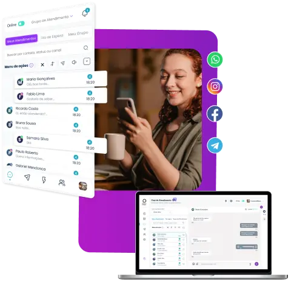

Descubra o que o Mutant Whats pode fazer pelo seu negócio
Gerencie sua operação em tempo real
No Mutant Whats você tem a visão completa dos seus atendimentos e da fila de espera, acompanha indicadores e gera diversos relatórios
Tenha total liberdade para personalizar a comunicação com seus clientes
Utilize recursos como imagens, áudios, vídeos e emojis para surpreender seus clientes com uma experiência mais humanizada
Tenha vários atendentes em um único WhatsApp
Realize atendimentos simultâneos com vários atendentes usando a mesma conta, sem depender de um celular conectado
Utilize chatbots e ganhe eficiência na sua operação
Construa seu próprio robô de atendimento para oferecer suporte 24h e automatizar parte dos seus atendimentos, evitando filas de espera